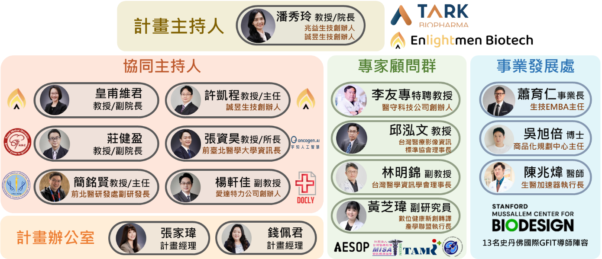

教育
跨域課程、數位教材、EMI/ESP 與案例教學，降低跨領域學習門檻。
115-117 年度｜精準醫療重點領域
以 AI 藥物結構開發、蛋白質藥物開發與智慧精準檢測為核心，串聯教育、研發、產業與創業，培育具國際競爭力的智慧健康跨域人才。

Program Vision
臺北醫學大學因應教育部「智慧健康產業跨領域生技人才培育計畫」，聚焦精準醫療與 AI 藥物開發，透過課程、專案、實習與創業輔導，讓學生從理解臨床痛點開始，一路走到技術驗證與產業轉譯。
本頁資訊取自計畫申請書與簡報素材，並整理為適合公開瀏覽的介紹網站，協助學生、產業夥伴與國際合作單位快速掌握計畫方向。
跨域課程、數位教材、EMI/ESP 與案例教學，降低跨領域學習門檻。
整合 AI、結構生物學、多體學、臨床大數據與分子診斷。
導入企業導師、場域參訪、CRO 與藥廠實習，縮短學用落差。
串聯 TMU SPARK、創創中心與加速器，推進智財、法規與募資。
Core Strengths
以醫科院、附屬醫院、數據平台、加速器與雙和生醫園區形成教學、驗證與轉譯場域。

涵蓋化合物設計、活性預測、ADMET 評估、蛋白質結構模擬與抗體藥物開發。
結合基因檢測、單細胞定序、多體學分析與臨床資料，建立疾病分型與藥物反應分析能力。
運用真實世界資料、電子病歷與健康物聯網，推動智慧化用藥管理與高齡健康應用。
Curriculum
課程涵蓋技術研發、臨床應用、產業實務到創業商品化，形成完整訓練閉環。
涵蓋小分子藥物、生物製劑、基因分析與 AI 多體學應用，訓練學生從資料挖掘到臨床轉譯。
聚焦高齡健康、用藥安全、臨床決策與真實世界資料，培養智慧照護與用藥管理能力。
以企業導師、產業參訪與小組專案連結藥廠、CRO、精準檢測實驗室與新創公司。
從痛點探索、智財布局、技術鑑價到商業計畫書與 Demo Day，陪伴團隊完成新創第一哩路。
Two-Year Roadmap
建置跨域高階課程與數位教材，導入業界師資，啟動國際交流與海外見實習，建立學生在 AI、藥物開發、精準醫療與智齡科技的共同語言。
以專案導向課程、創業育成與國際實戰驗證，將學習成果轉化為具臨床價值與市場潛力的產品、服務或新創提案。
Industry & Global Network
北醫長期與國內外企業、法人、藥廠與頂尖大學建立合作網絡，並以附屬醫院、事業發展處、數據處、醫學模擬教育中心與生醫加速器支援場域驗證與成果轉譯。
AI 藥物設計、生技製藥、CRO、精準檢測、醫學資訊、國際藥廠。
Sunway University、Taylor's University、i3L，以及 MIT、Stanford、Oxford 等合作網絡。
TMU SPARK、創新創業教育中心、生醫加速器、投資媒合與 Demo Day。
修課率、實習參與率、競賽成果、專利技轉、新創成立與跨國合作案例。
Leadership
由醫學科技學院整合校內教師、產業專家、事業發展處與計畫辦公室，建立學術與產業並重的支援體系。

Contact
如需課程合作、產業見實習、國際交流或創新創業輔導，可由臺北醫學大學醫學科技學院計畫辦公室協助接洽。
聯絡人錢佩君 Peggy Chien
單位臺北醫學大學｜醫學科技學院｜院經理
電話02-6620-2589 分機 11202
Emailpeggy@tmu.edu.tw